Labels de pertinence simulés : ces résultats ne mesurent pas la précision réelle en production.
Modèle : random_forest_leaf_24 ; seuil : 0.478388. Matrices : lignes réelles, colonnes prédites. Scores IA calculés sur offres admissibles uniquement. Les offres exclues sont listées dans exports/predictions.csv.
Le graphique train/validation/test compare des scores du modèle déjà entraîné. Ce n'est pas une courbe d'apprentissage par époque ; cet historique n'est pas enregistré par l'entraînement existant. Le modèle et le seuil ont été sélectionnés sur validation : ses scores participent donc à la sélection.
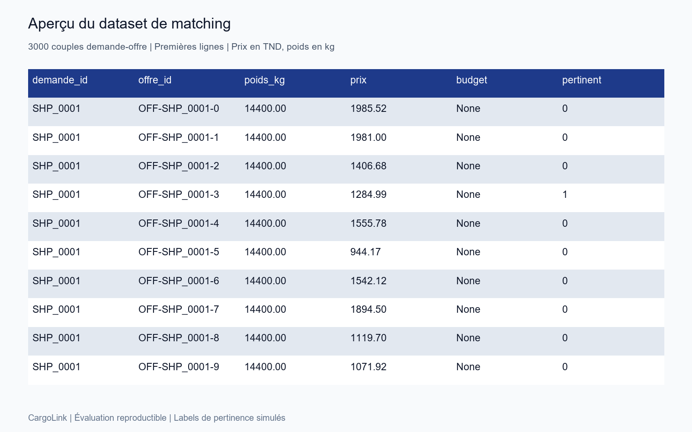
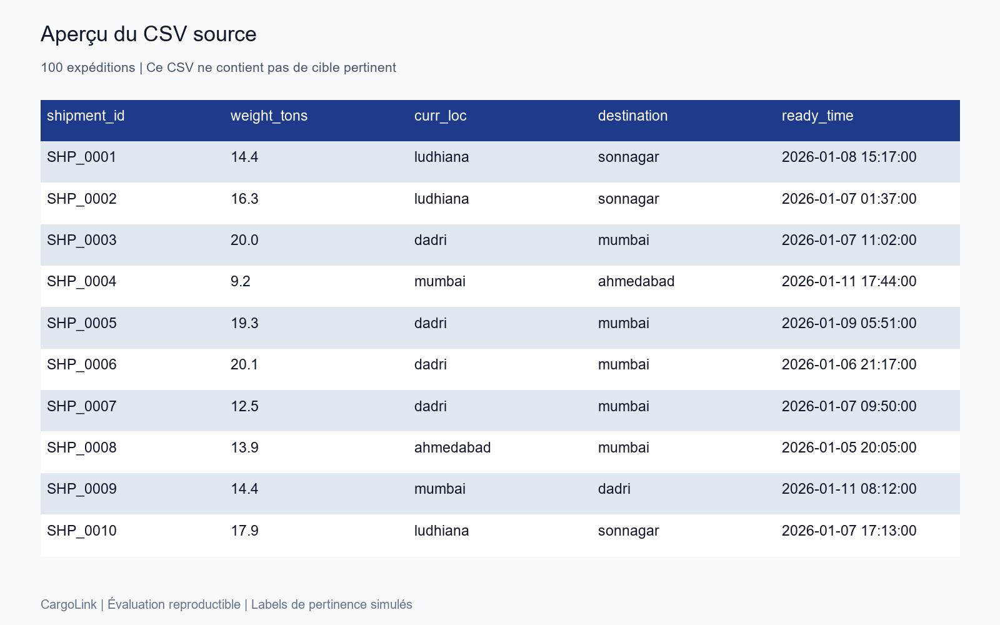
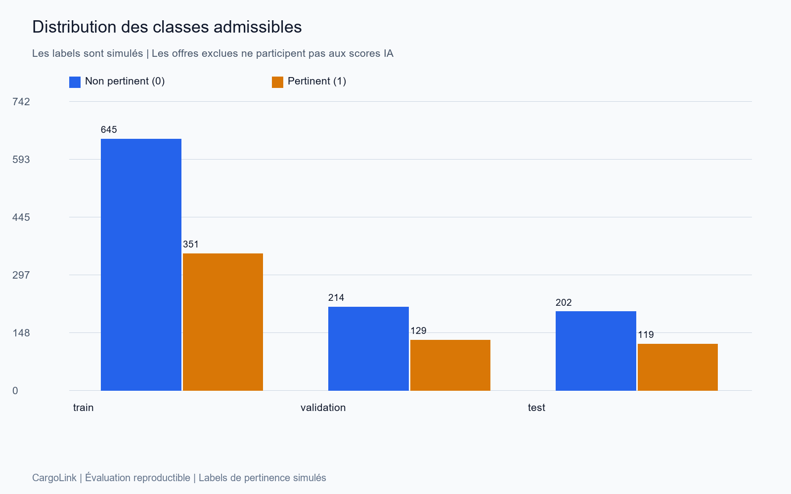
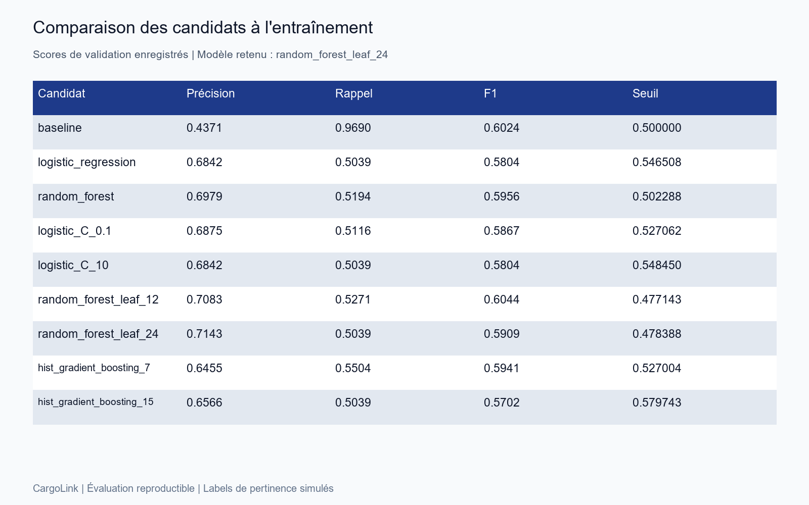
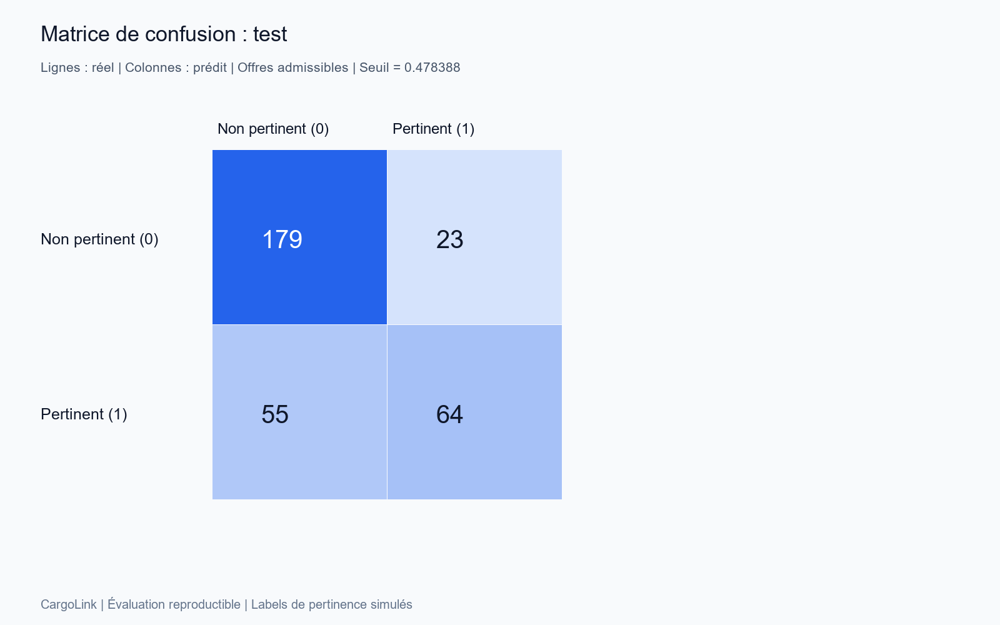
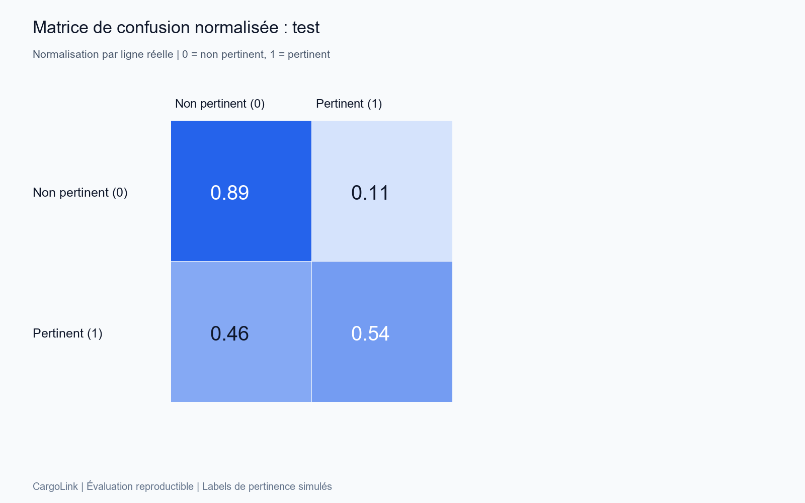
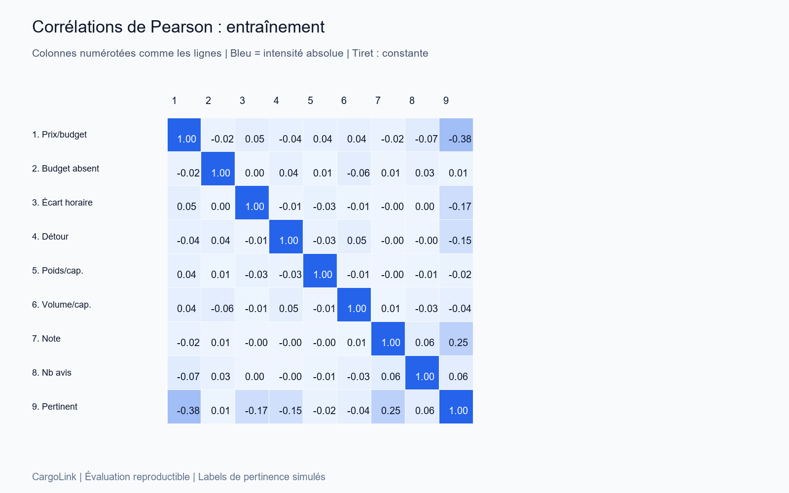
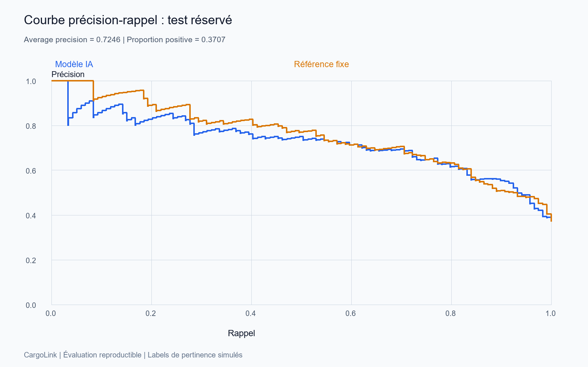
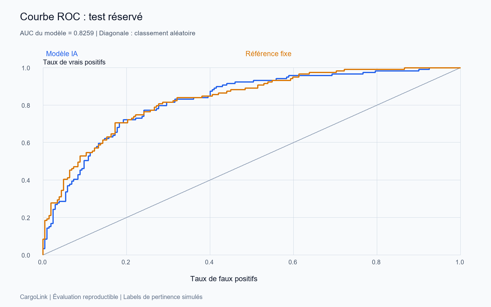
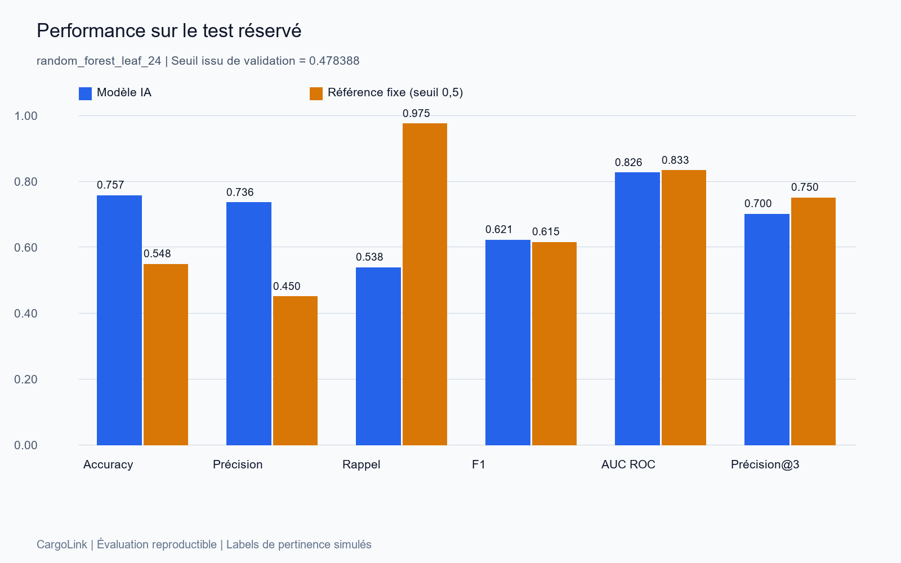
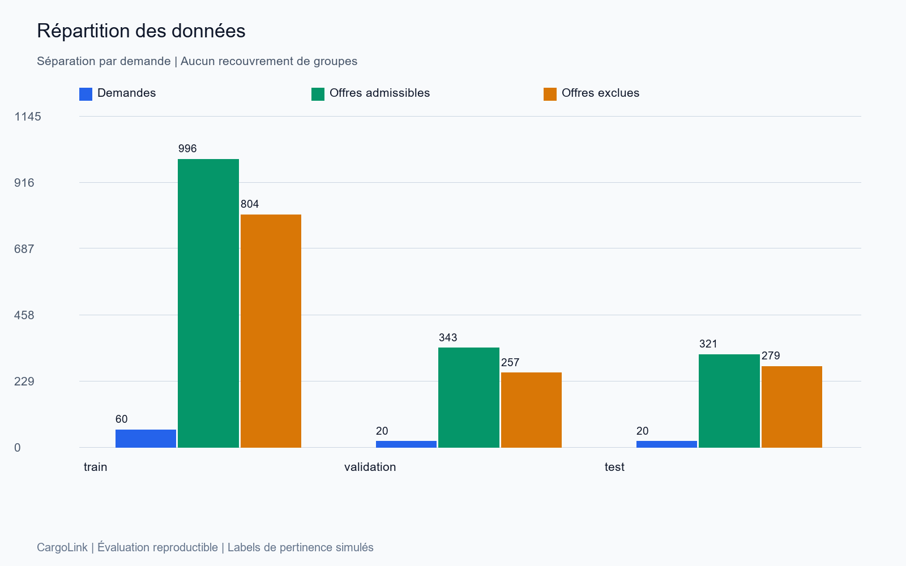
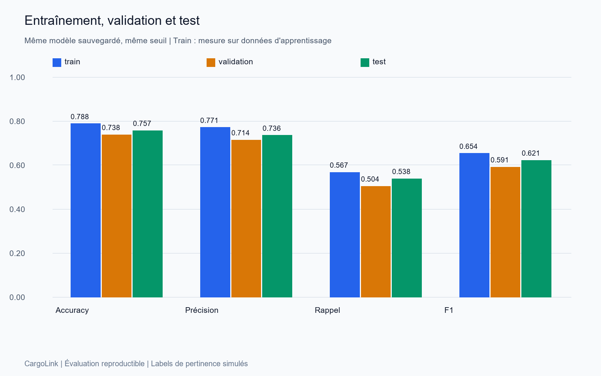